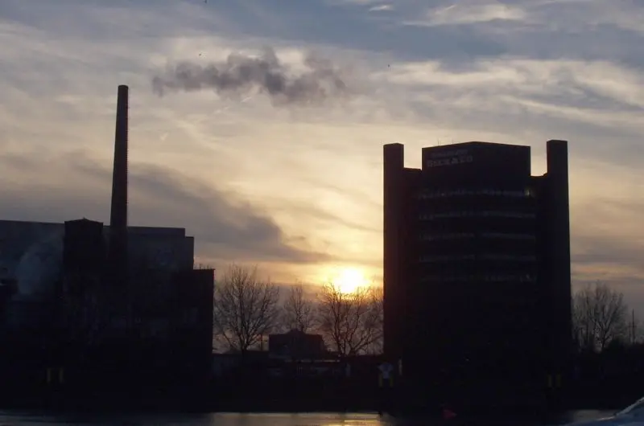

대표 로고대표 브랜드 마크
대표 로고대표 브랜드 마크벡스 Beck's
벡스(Beck's)는 독일 브레멘에 본사를 둔 맥주 브랜드이다. 엷은 황금색의 페일 라거로 유명하며, 1873년부터 맥주를 생산해 왔고 모기업은 Anheuser-Busch InBev이다.
최종 업데이트
벡스는 어떤 브랜드인가
벡스는 독일 북부의 항구도시 브레멘에서 1873년부터 맥주를 생산해 온 브랜드로, 엷은 황금색의 페일 라거로 유명하다. 영국 남부의 두줄보리와 남부 독일의 할레타우 홉을 사용해 만들며, 독일에서 최초로 초록색 병을 사용한 회사이다.
독일에서 수출량이 가장 많은 맥주로, 독일 현지 점유율 3위, 미국 수입맥주 1위를 기록하고 있다. 현재 전 세계 120개 나라에서 팔리고 있으며, 2007년 통계에 따르면 1초당 60.5병이 판매되었다.
해외시장을 적극적으로 개척하며 보수적인 다른 독일 맥주회사보다 빨리 맥주혼합음료를 개발해 크게 성공했다. 모기업은 Anheuser-Busch InBev이며 본사는 브레멘에 있다.
벡스는 어떻게 시작되고 성장했나
벡스는 1873년 독일 북부의 항구도시 브레멘에서 맥주 생산을 시작했으며, 창업자는 Heinrich Beck과 Lüder Rutenberg이다. 첫 맥주를 초록색 와인 병에 담아 팔기 시작한 것이 계기가 되어, 독일에서 최초로 초록색 병을 사용한 회사가 되었다.
브레멘 도시 문장의 열쇠 모양을 넣으려 했으나 시로부터 사용 허가를 받지 못해 열쇠 방향을 반대로 바꿔 사용했다. 이는 1876년 당시 술에 도시 문장을 쓰는 것이 탐탁지 않게 여겨졌기 때문이다.
이후 해외시장을 적극적으로 개척하며 수출량이 가장 많은 독일 맥주로 성장했고, 현재 120개 나라에서 판매된다.
벡스의 브랜드 아이덴티티는 무엇인가
독일에서 최초로 초록색 병을 사용했고, 독일 맥주 순수령을 벗어난 맥주 혼합 음료를 일찍 내놓은 진보적인 독일 양조장이라는 점이 벡스를 구분 짓는다.
벡스의 대표 제품과 서비스는 무엇인가
대표 제품은 벡스 필스너로, 엷은 황금색에 약간 건초 같은 홉의 아로마가 나며 피니시에서 약간의 쓴맛이 나타난다. 알코올 함량은 5.0%이고 물, 맥아, 이스트, 이산화탄소, 홉으로 만들며 하면발효 방식이다.
벡스 다크는 마호가니 색깔의 흑맥주로, 몰트의 약한 달콤함과 볶은 곡물, 약간의 캐러멜 맛이 나며 전체적으로 깔끔하다. 맥주 혼합 음료로는 level 7, green lemon, gold, ice가 있으며, ice는 라임과 민트를 첨가했다.
병뚜껑은 트위스터 방식이 아니라 병따개로 여는 방식이다.
벡스는 지금 어떤 상태인가
현재 벡스는 Anheuser-Busch InBev 소속이며 본사는 브레멘이다. 전 세계 120개 나라에서 판매되고 있으며, 독일 현지 점유율 3위, 미국 수입맥주 1위를 기록하고 있다.
2008년에는 런던 왕립예술학교와 함께 신예 아티스트 4인을 선정해 '맥주병 캔버스'를 제공했고, 총 2,700만 병이 유통되었다. 20여 년간 영국 현대예술가들을 후원해 온 것도 특징이다.
벡스 로고는 어떻게 변해왔나
대표 로고대표 브랜드 마크사진으로 보는 벡스의 역사

자주 묻는 질문
벡스는 어느 나라 브랜드인가요?
벡스는 독일의 식음료 브랜드입니다.
벡스는 언제 설립되었나요?
벡스는 1873년 설립되었습니다.
벡스의 브랜드 아이덴티티는 무엇인가요?
독일에서 최초로 초록색 병을 사용했고, 독일 맥주 순수령을 벗어난 맥주 혼합 음료를 일찍 내놓은 진보적인 독일 양조장이라는 점이 벡스를 구분 짓는다.
벡스의 대표 제품은 무엇인가요?
대표 제품은 벡스 필스너로, 엷은 황금색에 약간 건초 같은 홉의 아로마가 나며 피니시에서 약간의 쓴맛이 나타난다.
벡스는 현재 어떤 상태인가요?
현재 벡스는 Anheuser-Busch InBev 소속이며 본사는 브레멘이다.
벡스의 창업자는 누구인가요?
벡스의 창업자는 Heinrich Beck, Lüder Rutenberg입니다(위키데이터 기준).
벡스의 본사는 어디에 있나요?
벡스의 본사는 브레멘에 있습니다(위키데이터 기준).
출처와 검증
벡스 관련 참고: 공식 웹사이트 · 위키데이터 Q106854 · 한국어 위키백과 · 영어 위키백과. 브랜드명은 한글과 원어를 함께 표기하되 데이터에 없는 표기는 만들지 않습니다. 기원 국가·설립연도는 검수된 정의문에서 확인된 값을 우선하고, 없을 때만 공식 웹사이트 URL이 일치하는 위키데이터 개체의 값을 씁니다. 위키데이터 값은 2026-11-07 기준입니다.